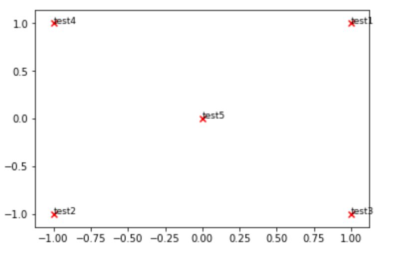
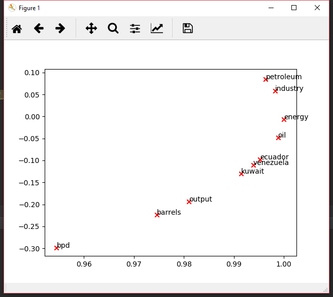
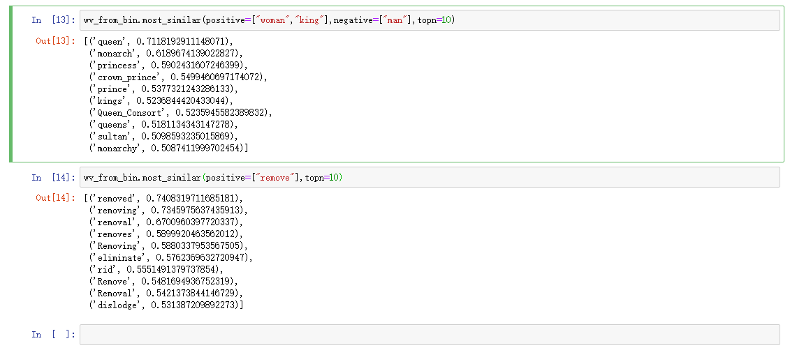
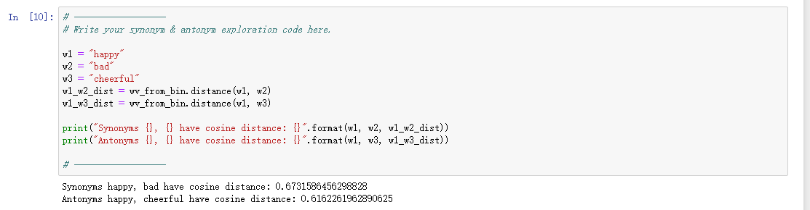

CS224n Assignment1
Pre Import
# All Import Statements Defined Here
# Note: Do not add to this list.
# All the dependencies you need, can be installed by running .
# ----------------
import sys
assert sys.version_info[0]==3
assert sys.version_info[1] >= 5
from gensim.models import KeyedVectors
from gensim.test.utils import datapath
import pprint
import matplotlib.pyplot as plt
plt.rcParams['figure.figsize'] = [10, 5]
import nltk
nltk.download('reuters')
from nltk.corpus import reuters
import numpy as np
import random
import scipy as sp
from sklearn.decomposition import TruncatedSVD
from sklearn.decomposition import PCA
START_TOKEN = '<START>'
END_TOKEN = '<END>'
np.random.seed(0)
random.seed(0)
# ----------------
Part1:Count-Based Word Vectors (10 points)(基于计数的词向量 (10分))
读取google 词向量预训练数据的函数
def read_corpus(category="crude"):
""" Read files from the specified Reuter's category.
Params:
category (string): category name
Return:
list of lists, with words from each of the processed files
"""
files = reuters.fileids(category)
return [[START_TOKEN] + [w.lower() for w in list(reuters.words(f))] + [END_TOKEN] for f in files]
Question 1:Implement distinct_words [code] (2 points)
Write a method to work out the distinct words (word types) that occur in the corpus. You can do this with for loops, but it’s more efficient to do it with Python list comprehensions. In particular, this may be useful to flatten a list of lists. If you’re not familiar with Python list comprehensions in general, here’s more information.
You may find it useful to use Python sets to remove duplicate words.
就是完成 distinct_words函数，找出一个语料库内不重复的词的集合。可以利用python集合类型完成
def distinct_words(corpus):
""" Determine a list of distinct words for the corpus.
Params:
corpus (list of list of strings): corpus of documents
Return:
corpus_words (list of strings): list of distinct words across the corpus, sorted (using python 'sorted' function)
num_corpus_words (integer): number of distinct words across the corpus
"""
# ------------------
# Write your implementation here.
corpus_words = []
num_corpus_words = -1
corpus_words=sorted(list(set(itertools.chain.from_iterable(corpus))))
# print(corpus_words)
num_corpus_words=len(corpus_words)
# ------------------
return corpus_words, num_corpus_words
Question 1.2: Implement compute_co_occurrence_matrix [code] (3 points)
Write a method that constructs a co-occurrence matrix for a certain window-size n (with a default of 4), considering words n before and n after the word in the center of the window. Here, we start to use numpy (np) to represent vectors, matrices, and tensors. If you’re not familiar with NumPy, there’s a NumPy tutorial in the second half of this cs231n Python NumPy tutorial.
就是完成计算共现矩阵的函数
def compute_co_occurrence_matrix(corpus, window_size=4):
""" Compute co-occurrence matrix for the given corpus and window_size (default of 4).
Note: Each word in a document should be at the center of a window. Words near edges will have a smaller
number of co-occurring words.
For example, if we take the document "START All that glitters is not gold END" with window size of 4,
"All" will co-occur with "START", "that", "glitters", "is", and "not".
Params:
corpus (list of list of strings): corpus of documents
window_size (int): size of context window
Return:
M (numpy matrix of shape (number of corpus words, number of corpus words)):
Co-occurence matrix of word counts.
The ordering of the words in the rows/columns should be the same as the ordering of the words given by the distinct_words function.
word2Ind (dict): dictionary that maps word to index (i.e. row/column number) for matrix M.
"""
words, num_words = distinct_words(corpus)
M = None
word2Ind = {}
# ------------------
# Write your implementation here.
i=0
for v_c in words:
#print(v_c,num_words)
word2Ind.update({v_c: i})
i=i+1
M=np.zeros((num_words,num_words))
for str in corpus:
for i_v_c in range(len(str)):
for i_c_o in range(window_size):
# print(i_c_o)
if (i_v_c - i_c_o - 1 >= 0):
# print(str[i_v_c])
M[word2Ind[str[i_v_c]]][word2Ind[str[i_v_c - i_c_o - 1]]] = M[word2Ind[str[i_v_c]]][word2Ind[
str[i_v_c - i_c_o - 1]]] + 1
if (i_v_c + i_c_o + 1 < len(str)):
# print(str[i_v_c])
M[word2Ind[str[i_v_c]]][word2Ind[str[i_v_c + i_c_o + 1]]] = M[word2Ind[str[i_v_c]]][word2Ind[
str[i_v_c + i_c_o + 1]]] + 1
#print(word2Ind)
#M=np.matrix([num_words,num_words])
return M, word2Ind
Question 1.3: Implement reduce_to_k_dim [code] (1 point)
Construct a method that performs dimensionality reduction on the matrix to produce k-dimensional embeddings. Use SVD to take the top k components and produce a new matrix of k-dimensional embeddings.
Note: All of numpy, scipy, and scikit-learn (sklearn) provide some implementation of SVD, but only scipy and sklearn provide an implementation of Truncated SVD, and only sklearn provides an efficient randomized algorithm for calculating large-scale Truncated SVD. So please use sklearn.decomposition.TruncatedSVD.
完成SVD降维函数。要求用sklearn提供的svd函数。所以很简单，直接调用就行
``` python
def reduce_to_k_dim(M, k=2):
“”” Reduce a co-occurence count matrix of dimensionality (num_corpus_words, num_corpus_words)
to a matrix of dimensionality (num_corpus_words, k) using the following SVD function from Scikit-Learn:- http://scikit-learn.org/stable/modules/generated/sklearn.decomposition.TruncatedSVD.html
Params:
M (numpy matrix of shape (number of corpus words, number of corpus words)): co-occurence matrix of word counts
k (int): embedding size of each word after dimension reduction
Return:
M_reduced (numpy matrix of shape (number of corpus words, k)): matrix of k-dimensioal word embeddings.
In terms of the SVD from math class, this actually returns U * S
"""
n_iters = 10 # Use this parameter in your call to `TruncatedSVD`
M_reduced = None
print("Running Truncated SVD over %i words..." % (M.shape[0]))
# ------------------
# Write your implementation here.
pca=PCA(n_components=k)
M_reduced = pca.fit_transform(M)
# ------------------
print("Done.")
return M_reduced
###Question 1.4: Implement plot_embeddings [code] (1 point)
Here you will write a function to plot a set of 2D vectors in 2D space. For graphs, we will use Matplotlib (plt).
For this example, you may find it useful to adapt this code. In the future, a good way to make a plot is to look at the Matplotlib gallery, find a plot that looks somewhat like what you want, and adapt the code they give.
>也就是根据指定的词和降维到2维后的词向量矩阵，进行绘制2D图像
``` python
def plot_embeddings(M_reduced, word2Ind, words):
""" Plot in a scatterplot the embeddings of the words specified in the list "words".
NOTE: do not plot all the words listed in M_reduced / word2Ind.
Include a label next to each point.
Params:
M_reduced (numpy matrix of shape (number of unique words in the corpus , k)): matrix of k-dimensioal word embeddings
word2Ind (dict): dictionary that maps word to indices for matrix M
words (list of strings): words whose embeddings we want to visualize
"""
# ------------------
# Write your implementation here.
i=0
print(words)
print(M_reduced)
for x in words:
plt.scatter(M_reduced[word2Ind[x]][0],M_reduced[word2Ind[x]][1],marker='x',c='r',)
plt.annotate(x, xy=(M_reduced[word2Ind[x]][0],M_reduced[word2Ind[x]][1]), xytext=(M_reduced[word2Ind[x]][0],M_reduced[word2Ind[x]][1]))
i=i+1
plt.show()
# ------------------

Question 1.5: Co-Occurrence Plot Analysis [written] (3 points)
Now we will put together all the parts you have written! We will compute the co-occurrence matrix with fixed window of 4, over the Reuters “crude” corpus. Then we will use TruncatedSVD to compute 2-dimensional embeddings of each word. TruncatedSVD returns U*S, so we normalize the returned vectors, so that all the vectors will appear around the unit circle (therefore closeness is directional closeness). Note: The line of code below that does the normalizing uses the NumPy concept of broadcasting. If you don’t know about broadcasting, check out Computation on Arrays: Broadcasting by Jake VanderPlas.
Run the below cell to produce the plot. It’ll probably take a few seconds to run. What clusters together in 2-dimensional embedding space? What doesn’t cluster together that you might think should have? Note: “bpd” stands for “barrels per day” and is a commonly used abbreviation in crude oil topic articles.
就是对真正的语料库结果进行分析。直接运行贴结果就行
# -----------------------------------------------------------------
# Run Cell to Reduce 300-Dimensinal Word Embeddings to k Dimensions
# Note: This may take several minutes
# -----------------------------------------------------------------
# -----------------------------------
# Run Cell to Load Word Vectors
# Note: This may take several minutes
# -----------------------------------
wv_from_bin = load_word2vec()
M, word2Ind = get_matrix_of_vectors(wv_from_bin)
M_reduced = reduce_to_k_dim(M, k=2)
words = ['barrels', 'bpd', 'ecuador', 'energy', 'industry', 'kuwait', 'oil', 'output', 'petroleum', 'venezuela']
plot_embeddings(M_reduced, word2Ind, words)

Part 2: Prediction-Based Word Vectors (15 points)(基于预测的词向量(15分))
Reducing dimensionality of Word2Vec Word Embeddings
Let’s directly compare the word2vec embeddings to those of the co-occurrence matrix. Run the following cells to:
Put the 3 million word2vec vectors into a matrix M
Run reduce_to_k_dim (your Truncated SVD function) to reduce the vectors from 300-dimensional to 2-dimensional.
```
def get_matrix_of_vectors(wv_from_bin, required_words=[‘barrels’, ‘bpd’, ‘ecuador’, ‘energy’, ‘industry’, ‘kuwait’, ‘oil’, ‘output’, ‘petroleum’, ‘venezuela’]):
“”” Put the word2vec vectors into a matrix M.
Param:
wv_from_bin: KeyedVectors object; the 3 million word2vec vectors loaded from file
Return:
M: numpy matrix shape (num words, 300) containing the vectors
word2Ind: dictionary mapping each word to its row number in M
“””
import random
words = list(wv_from_bin.vocab.keys())
print(“Shuffling words …”)
random.shuffle(words)
words = words[:10000]
print(“Putting %i words into word2Ind and matrix M…” % len(words))
word2Ind = {}
M = []
curInd = 0
for w in words:
try:
M.append(wv_from_bin.word_vec(w))
word2Ind[w] = curInd
curInd += 1
except KeyError:
continue
for w in required_words:
try:
M.append(wv_from_bin.word_vec(w))
word2Ind[w] = curInd
curInd += 1
except KeyError:
continue
M = np.stack(M)
print(“Done.”)
return M, word2Ind
————————————————————————————————-
Run Cell to Reduce 300-Dimensinal Word Embeddings to k Dimensions
Note: This may take several minutes
————————————————————————————————-
M, word2Ind = get_matrix_of_vectors(wv_from_bin)
M_reduced = reduce_to_k_dim(M, k=2)
###Question 2.1: Word2Vec Plot Analysis [written] (4 points)(词向量绘制解析)

###Question 2.2: Polysemous Words (2 points) [code + written] (近义词检索)
``` python
wv_from_bin.most_similar(positive=["woman","king"],negative=["man"],topn=10)
wv_from_bin.most_similar(positive=["remove"],topn=10)

Question 2.3: Synonyms & Antonyms (2 points) [code + written]

Question 2.4: Finding Analogies [code + written] (2 Points)
wv_from_bin.most_similar(positive=["woman","king"],negative=["man"],topn=10)